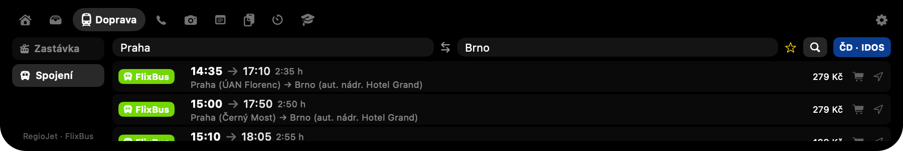
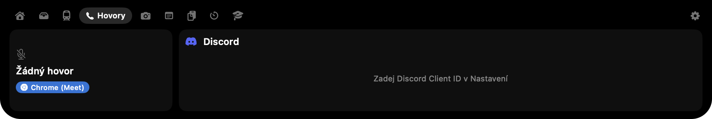

Výřez MacBooku, konečně k něčemu.
NotchIsland promění výřez kolem kamery v Dynamic Island. Najeď myší a rozbalí se: hudba, soubory, živá MHD, tvůj rozvrh, screenshoty, schránka, časovač a počasí.
Zdarma · Open source (MIT) · macOS 14+ · Apple Silicon i Intel · česky, anglicky, německy, slovensky, polsky
Podívej se, jak to funguje
Najeď na notch níže. Klikej na záložky. Je to skutečné rozložení, postavené v HTML.

The Killers · Hot Fuss
Další: MAT · A315 · za 12 min
#general: Adam, Kuba, Tereza
Odpočet běží vedle kamery. Klik pauzne.
Tohle je ukázka v HTML. Ta pravá je jedno stažení daleko.
Všechno jedním najetím myši
Devět modulů. Co nepotřebuješ, vypneš.
Právě hraje
Obal, název, ovládání a equalizer pro Spotify, Apple Music i cokoli v prohlížeči. Když hraje hudba, vedle kamery se objeví malá křídla.
Odkladiště souborů
Přetáhni soubory na notch, odlož si je a později je odtud přetáhni kamkoli.
Živá doprava
Odjezdy PID se zpožděním a sledováním vozu, plus vyhledávač RegioJet / FlixBus s cenami, místy a živým zpožděním.
Rozvrh ze školy
Rozvrh z Bakalářů s učebnami, suplováním a zrušenými hodinami. Odpočet přestávky v notchi a oznámení, když přestávka začne.
Screenshoty
⌘⇧2 oblast, ⌘⇧1 obrazovka, ⌘⇧O rozpoznání textu (OCR). Hned ve schránce; editor se šipkami, rozmazáním a počítadly.
Historie schránky
⌘⇧V ukáže posledních 10 zkopírovaných věcí. Klik vloží rovnou do aktivní aplikace.
Časovač a Pomodoro
Odpočet vedle kamery, klik pauzne. Pomodoro 25/5 s dlouhými pauzami.
Hovory
Pozná, když Discord, Zoom, Teams nebo FaceTime používají mikrofon. Ukáže, kdo je s tebou v hlasovém kanálu na Discordu, a umí mute z notche.
Počasí a kalendář
Dlaždice ve stylu Apple Počasí podle tvé polohy a kalendářní pásek, kterým se listuje tažením.
Screenshoty
Skutečné snímky z aplikace.


Instalace za minutu
NotchIsland.app → Otevřít. macOS ukáže varování, protože appka není notarizovaná; stane se to jen jednou.Časté otázky
Je to zdarma?
Ano, zdarma a open source pod licencí MIT.
Na jakých Macích to funguje?
macOS 14 Sonoma nebo novější. Plný efekt vyžaduje MacBook s výřezem (Pro 2021+, Air 2022+); ostatní Macy dostanou malý ostrůvek pod horní hranou.
„NotchIsland nelze otevřít, protože Apple nemůže ověřit, že neobsahuje malware"
Pravý klik na appku → Otevřít, nebo Nastavení systému → Soukromí a zabezpečení → Přesto otevřít. Jednou.
Vidí to YouTube v prohlížeči?
Ano. Čte stejné Právě hraje, které macOS ukazuje v Ovládacím centru, takže Chrome, Safari, podcasty i každá hudební appka se ukážou.
Screenshoty jsou černé nebo zkratka nic nedělá
Povol NotchIsland v Nastavení systému → Soukromí a zabezpečení → Nahrávání obrazovky. Pokud zároveň běží Shottr, bere si stejné zkratky; vypni ho nebo mu změň klávesy.
Posílá to někam moje data?
Žádné účty, žádné servery. Požadavky jdou jen na veřejné služby, které používáš: dopravní data, počasí Open-Meteo, Bakaláři tvé školy.
Jdou schovat moduly, které nepoužívám?
Ano, Nastavení → Moduly. Kliknutím záložku skryješ nebo ukážeš.